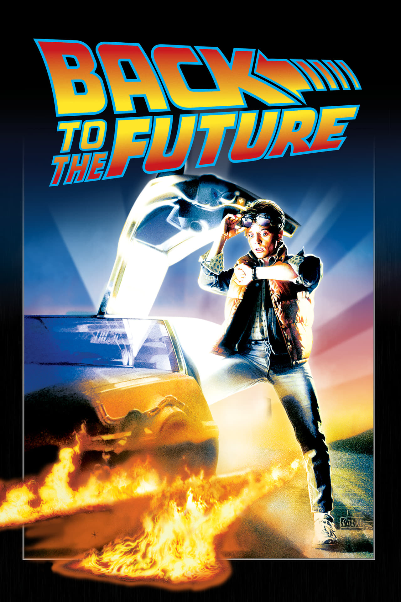

Back To The Future
Languages: English
Runtime: 1h 56min
Genre: Adventure, Comedy, Sci-Fi
Release Date: 3 July 1985
IMDB Rating: 8.5/10
Languages: English
Runtime: 1h 56min
Genre: Adventure, Comedy, Sci-Fi
Release Date: 3 July 1985
IMDB Rating: 8.5/10
Marty McFly, a 17-year-old high school student, is accidentally sent thirty years into the past in a time-traveling DeLorean invented by his close friend, the eccentric scientist Doc Brown.
Director: Robert Zemeckis
Writers: Robert Zemeckis, Bob Gale
Stars: Michael J. Fox, Christopher Lloyd, Lea Thompson